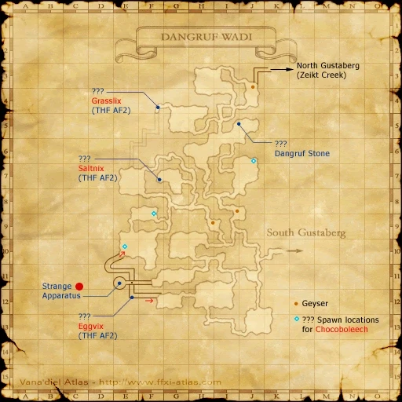

Level 75 reference · Zenith rules
This is the second Thief Artifact Armor quest - otherwise known as AF2.
|
Walkthrough
Note - Everything except the opening cutscene can be done as another job.
The Beginning
- First, speak to Nanaa Mihgo in Windurst Woods (J-3) and you will get a cut-scene (you might have to talk to her a few times to get it to activate).
- Then talk her two consorts, Cha Lebagta and Bopa Greso who are just south of Nanaa Mihgo at J-4. They tell you where to find the thieves you need to find. Note: This dialogue is not optional on Eden (it is listed as optional on main FFXI Wiki). If you do not speak with these two, you may not be able to proceed in this quest.
Sauromugue
Note: You will need to beat a Goblin here, so bring friends or a high-level player. See Climbpix Highrise for more information on the mob.
- Head to Sauromugue Champaign to try to climb up the towers to meet the first thief. You will need to go around to the towers and touch a ??? at their base until you spawn Climbpix Highrise. There are 6 towers in all that are represented by dark dots on the Sauromugue Champaign map.
- G-6
- G/H-8
- I/J-7
- J/K-8
- K-9
- I-10 (Can only be reached by going through Garlaige Citadel, passing through the third Banishing Gate and exiting into Sauromugue Champaign)
- The tower that spawns Climbpix Highrise is random, so just check them all until he pops, and then take him out. Lot on the Grapnel that drops, as you'll need this to reach the thief.
***The NM spawn location will reset each in game day making it possible to avoid going though the Banishing Gate ***
- Next, go to the tower at I/J-7 and take off all your equipment so that you're buck naked! Trade your Grapnel to the ??? and watch the cut-scene to get your first letter signed.
Gambling
- Go to Lower Jeuno (H-10) and talk to Sniggnix (in the back hallway at Muckvix's Junk Shop). He will play a little game of 'roll-the-dice.' All you have to do is keep rolling against him till you beat him. Then he'll tell you to go to Dangruf Wadi to gamble some more.


Image source
Dangruf Wadi
Note: You will need the Gausebit Grass, Rock Salt, and Lizard Eggs for this part. You can buy some of each, or just farm them from the mobs in Dangruf Wadi. There is no set number as to how many you need - it all depends on how lucky you are.
Note: There are a number of geysers found in Dangruf Wadi that you can use to ride up the cliff they're next to. If it seems you've reach a dead-end, look around for a geyser.
- You now get to gamble against 3 more Goblins. You have to beat them all in a row, without failing on one in between. For example: if you beat the first and second goblin, then failed to the last, you would have to start over with the first again.
- Each time you roll against a Goblin you have to give them their favorite item. Once you've rolled, win or lose, the item is gone. If you have to roll against him again, you will need another of that item. Here are the Goblins' locations and items:
- First: Saltvix
- Item: Rock Salt (Can be farmed from Wadi Crabs found at H/I-12)
- Location: The ??? in the western part of the room at G-7 (technically the ??? is in F-7)
- Second: Grasswix
- Item: Gausebit Grass (Can be farmed from Wadi Hares found at G-7)
- Location: The ??? at F-4/5 where the underground tunnel comes out
- Third: Eggblix
- Item: Lizard Egg (Can be farmed from Steam Lizards found at G-5)
- Location: This is a hidden one - go to the area that spans across F-11 and G-11 and go all the way west. There is a hidden cave at F-11 - just walk through the wall. Follow the tunnel until you reach a hole in the floor. Drop down this hole and head south to the corner at E-12. This is where the ??? for the last goblin is.
- Go to these ??? in the order listed and trade each one their respective item. Then roll against them and hope that you win. Keep trying until you've succeeded against all three!
Little Sister
Note: You will need a party (or a high-level) to defeat the next mob - see Gambilox Wanderling for more information on her. It should be noted that Gambilox spams both Bomb Toss and Goblin Rush (particularly after using Mighty Strikes). Lower levels may want to stay back to avoid AoE damage.
- Once you have the gambling goblins beat, gather your party and head to J-3 in Dangruf Wadi. Ride the geyser up the cliff and follow the path until you zone out into North Gustaberg.
- Head to the east and follow the river all the way down to the waterfall (stay on the south side of the river).
- You'll find a ??? down here - click on it and spawn Gambilox Wanderling.
- After you defeat her, click on the ??? again to get a Regal Die and a cut-scene.
Finishing Up
- Head back to Lower Jeuno and trade your Regal Die to Sniggnix to get the second letter signed.
- Head back to Windurst Woods and speak to Nanaa Mihgo again to get your Rogue's Bonnet!
Game Description
Client: Nanaa Mihgo (Cat Burglar's lair, Windurst Woods)
Summary:
- Follow the "gang whereabouts note" to find the two remaining members af Atarefaunet's band of thieves. Hand each one of them a "counterfeit envelope" and have them sign the forged documents inside.
 Image source
Image source
Adapted from Eden Wiki: As Thick as Thieves · Contributors and history · CC BY-SA 4.0. Revision 45952. Layout, links and optional background text adapted for Zenith.